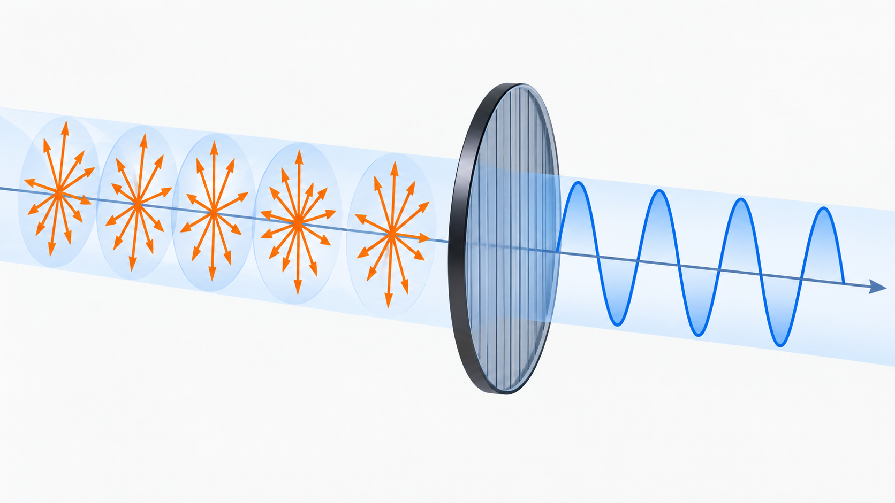
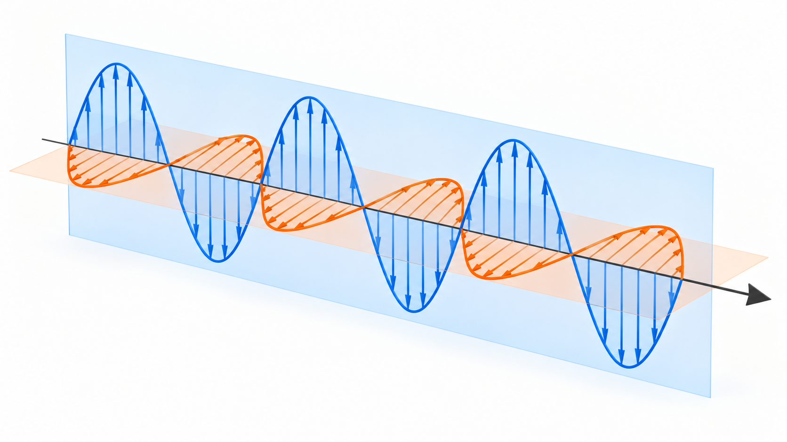
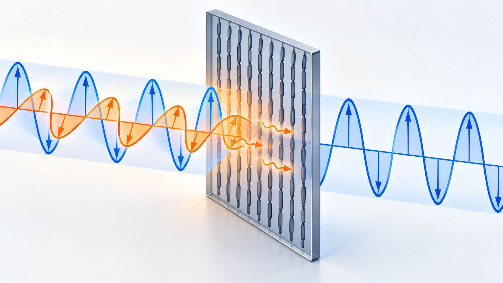

Livello intuitivo: Una corda può oscillare in alto e in basso oppure di lato. Un polarizzatore sceglie una direzione di oscillazione del campo elettrico della luce.
Per essere maggiormente rigorosi: La polarizzazione descrive il campo elettrico. La riduzione a metà vale per luce non polarizzata e polarizzatore ideale, non per ogni fascio.
Obiettivi di apprendimento
- Descrivere la polarizzazione di un’onda elettromagnetica.
- Distinguere luce non polarizzata, polarizzata linearmente e polarizzata circolarmente.
- Spiegare polarizzazione per assorbimento e riflessione.
Che cosa significa polarizzare la luce
In un’onda elettromagnetica piana, il campo elettrico e il campo magnetico oscillano su direzioni perpendicolari tra loro e alla direzione di propagazione. Per descrivere la polarizzazione si segue di solito la direzione del campo elettrico.
La luce è polarizzata linearmente quando il campo elettrico oscilla sempre lungo la stessa direzione. È polarizzata circolarmente quando la punta del vettore campo elettrico descrive una circonferenza nel tempo. Il caso generale è la polarizzazione ellittica.
La luce naturale è normalmente non polarizzata perché contiene contributi emessi indipendentemente, con orientamenti e fasi casuali. Il fatto che sia policromatica non è, da solo, la causa della mancata polarizzazione: anche una luce quasi monocromatica può essere non polarizzata.


Polarizzazione per assorbimento selettivo
Un polarizzatore lineare trasmette soprattutto la componente del campo elettrico parallela al proprio asse di trasmissione e attenua la componente perpendicolare. La luce non polarizzata ideale che attraversa un polarizzatore perfetto emerge con intensità media pari a metà di quella incidente:
Cosa Vuol Dire?
Livello intuitivo: Un polarizzatore ideale lascia passare metà dell’intensità della luce non polarizzata incidente.
Un secondo polarizzatore non dimezza automaticamente ancora: conta il suo angolo rispetto al primo.
Per essere maggiormente rigorosi: I in ; luce non polarizzata e polarizzatore ideale. Perdite reali riducono ulteriormente la trasmissione.
Questo valore vale per luce non polarizzata e polarizzatore ideale; i dispositivi reali introducono ulteriori perdite.

Polarizzazione per riflessione
La luce riflessa da una superficie dielettrica può risultare parzialmente polarizzata. All’angolo di Brewster, la componente con campo elettrico parallelo al piano d’incidenza non viene riflessa idealmente. L’angolo soddisfa:
Cosa Vuol Dire?
Livello intuitivo: La tangente dell’angolo di Brewster è indice del secondo mezzo diviso indice del primo.
A quell’angolo la componente p riflessa si annulla nel modello ideale; il riflesso di luce non polarizzata è polarizzato s.
Per essere maggiormente rigorosi: Interfaccia fra dielettrici non assorbenti. Angolo dalla normale; non vuol dire che tutta la luce incidente venga riflessa o polarizzata.
dove la luce passa dal mezzo di indice verso quello di indice . All’angolo di Brewster, raggio riflesso e raggio rifratto sono perpendicolari.
Occhiali polarizzati
Molti riflessi provenienti da superfici orizzontali, come acqua e asfalto, sono ricchi di una componente polarizzata orizzontalmente. Gli occhiali polarizzati impiegano un asse di trasmissione prevalentemente verticale, riducendo il riverbero. Non bloccano però ogni riflesso e possono rendere più difficili da leggere alcuni display LCD.